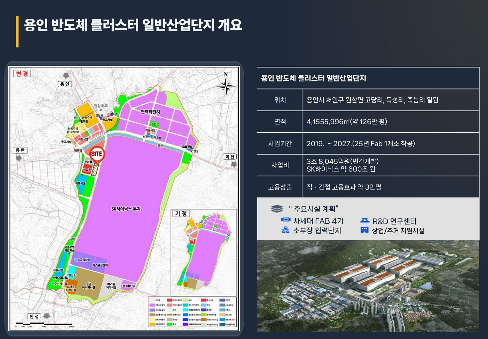

배치도
용인 반도체클러스터 일반산업단지 내 E2-1 지원시설용지의 위치 관계를 확인하는 사업계획서 기준 배치 자료입니다.

사업계획서에 포함된 배치도, 평면도, 입면도, 층별 구성 자료를 기준으로 정리한 설계 참고자료입니다.
현재 공개 가능한 사업계획서 기반 도면 자료만 표시합니다. 평면도, 입면도, 단면도 등 추가 원본 도면은 확인 후 보강이 필요합니다.
용인 반도체클러스터 일반산업단지 내 E2-1 지원시설용지의 위치 관계를 확인하는 사업계획서 기준 배치 자료입니다.

※ 본 자료는 사업계획서 기준 참고자료이며, 실제 설계·인허가·분양조건·계약조건에 따라 달라질 수 있습니다.
※ 평면도, 층별 평면도, 입면도, 단면도 원본 이미지는 현재 저장소에서 확인되지 않아 임의로 추가하지 않았습니다.